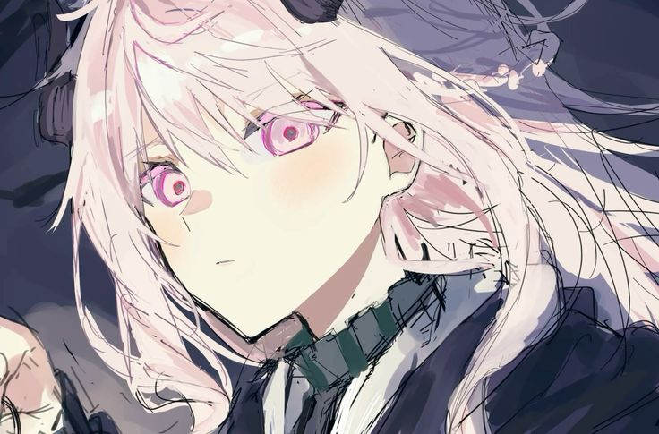

Connect
Let's stay connected.
Feel free to say hello.
Thanks for visiting my little corner.
I hope you found something here that made you smile, even if just for a moment.

Feel free to say hello.
I hope you found something here that made you smile, even if just for a moment.
